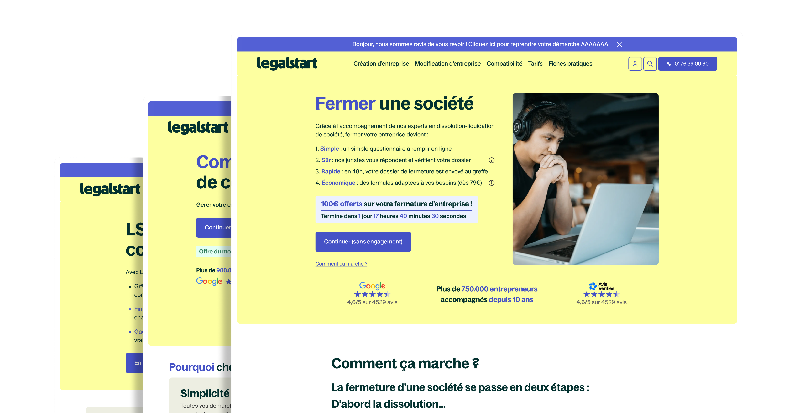

How I use AI for research, UX writing, workflow orchestration, and content production. Visual design tools do not fully support it yet, but everything around the design process already benefits.
To be clear: I do not use AI to generate visuals. Figma and visual design tools do not fully support it yet. What I do use it for is research, writing, content structuring, and pipeline automation. AI is a structural layer in the workflow, not a substitute for creative judgment.
The difference is the difference between pasting text into ChatGPT and building a pipeline where Figma, Claude, VS Code, and a CRM talk to each other without you manually moving information between them. The first saves you 10 minutes. The second changes what's possible in a sprint.
This page documents how I've integrated AI across the full design process, and the specific tools, workflows, and outcomes that came from it.
Used at the discovery phase to run deep competitive benchmarks fast. Instead of spending hours manually auditing competitor sites, I use Perplexity to pull structured comparisons across UX patterns, feature sets, pricing, and positioning. It cuts benchmarking time significantly and surfaces sources I wouldn't have found through standard search.
Used in early ideation to generate functional UI concepts quickly. Rather than spending time in Figma on a speculative idea that may not survive the first feedback session, I use Lovable to build rough interactive prototypes in minutes. This shifts the conversation from abstract to concrete much earlier in the process and improves the quality of design critiques.
Used across multiple stages: writing UX copy and microcopy, structuring case study narratives, generating component documentation, and as the intelligence layer in automated pipelines via MCP. Claude is the connective tissue between tools in the more advanced workflows described below.
The Figma MCP connector allows Claude to read Figma files directly, extract component data, and pass it into other systems. This is the key that unlocks the automated pipeline: instead of manually exporting assets or copying specs, the pipeline reads the design source of truth and acts on it.
Connected to Claude via the MCP pipeline, VS Code receives structured output from the design layer and applies it directly to code. This closes the handoff gap between design and development without a separate documentation step.
The end point of the pipeline for certain workflows. Design updates or content variations generated in Figma and processed through Claude can be pushed directly into HubSpot landing pages or email templates, removing the manual step of copy-pasting between tools and keeping the design system in sync with marketing output.
The most significant workflow I've built connects Figma, Claude, VS Code, and HubSpot through MCP. Here's how it works in practice:
The practical outcome: a change made in Figma propagates through to both the codebase and the CRM without a single manual copy paste. For landing pages and conversion focused flows where copy and design change frequently, this is a meaningful reduction in friction and error.

Here's how AI integrates at each stage of a typical project:
Perplexity runs structured benchmarks across competitors. Surfaces UX patterns, feature gaps, and positioning angles in a fraction of the time a manual audit would take.
Lovable generates rough functional prototypes from a prompt. Ideas that would take half a day to wireframe in Figma can be tested in conversation within 20 minutes, shifting design critiques from abstract to tangible much earlier.
Claude drafts microcopy, button labels, onboarding flows, and error messages at scale. The output is used as a starting point for review, not a finished product, but it eliminates the blank page problem and speeds up the iteration cycle significantly.
At Legalstart, AI assisted workflows enabled the creation and variation of 50+ templates. Repetitive layout tasks that would require manual duplication and adjustment are automated, freeing time for higher order decisions.
The Figma MCP connector passes component specs directly to Claude, which outputs structured frontend code into VS Code. This removes the translation step between design and implementation and keeps the codebase aligned with the Figma source.
Design updates flow through the pipeline to HubSpot, keeping landing page content and email templates in sync with the design system without manual intervention. Copy changes in Figma propagate automatically.
The most important shift is not speed, although the speed gains are real. The more significant change is in what becomes possible within a given timeline. When ideation is faster, you can explore more directions before committing. When handoff is automated, designers can iterate after development has started without it being disruptive. When content delivery is connected to the design system, marketing and product stay aligned without a coordination meeting.
AI doesn't replace design judgment. It removes the mechanical work that sits between judgment and output, which means more of the work is actually design work.
The pipeline described here is functional but not fully generalised. The Figma Claude VS Code connection works well for component level updates and structured content. The more complex the design logic, the more human review is needed in the middle. I am working on extending the pipeline to handle more edge cases and making the HubSpot sync more robust for multiple variant landing page testing.
The goal is not a fully automated design system. It is a system where the mechanical parts are automated and the creative and strategic parts get more time and attention.